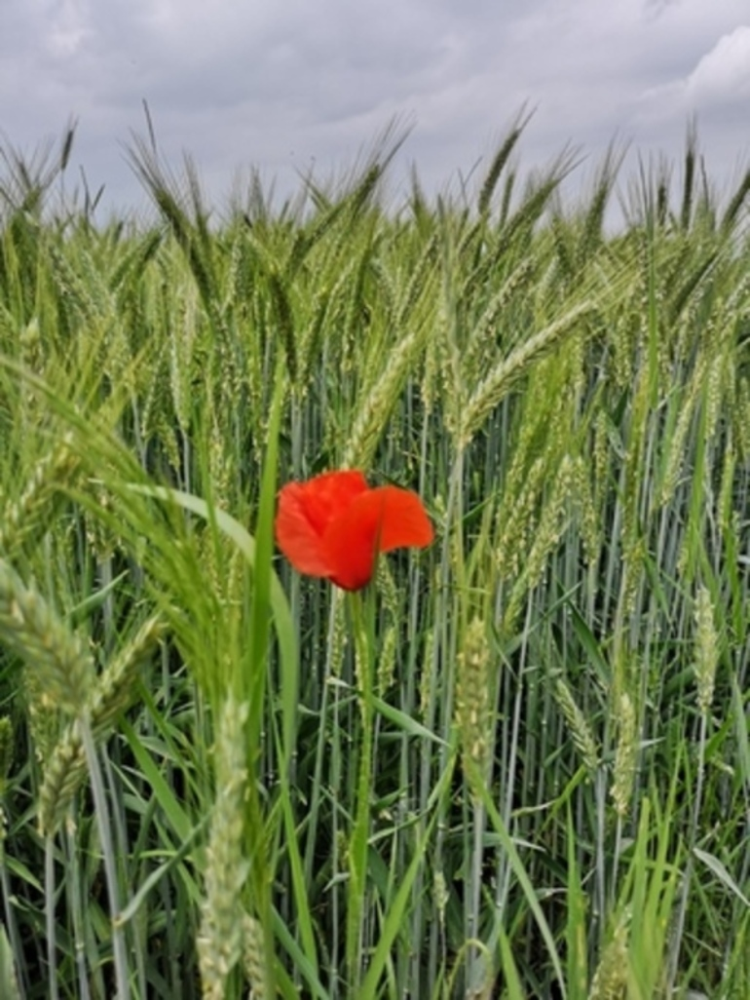
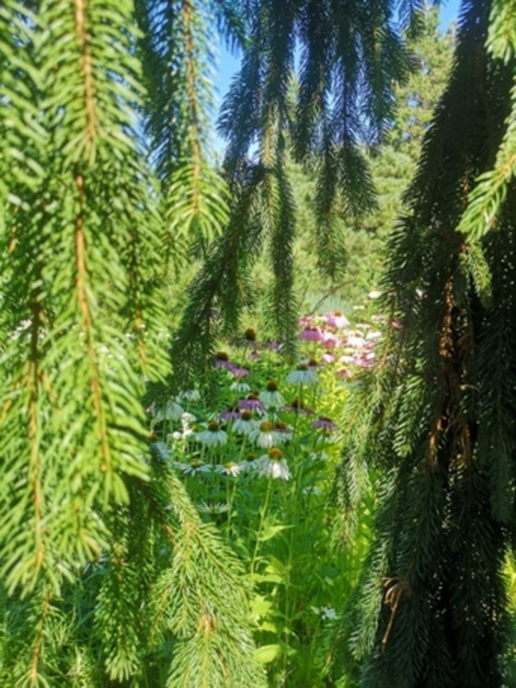
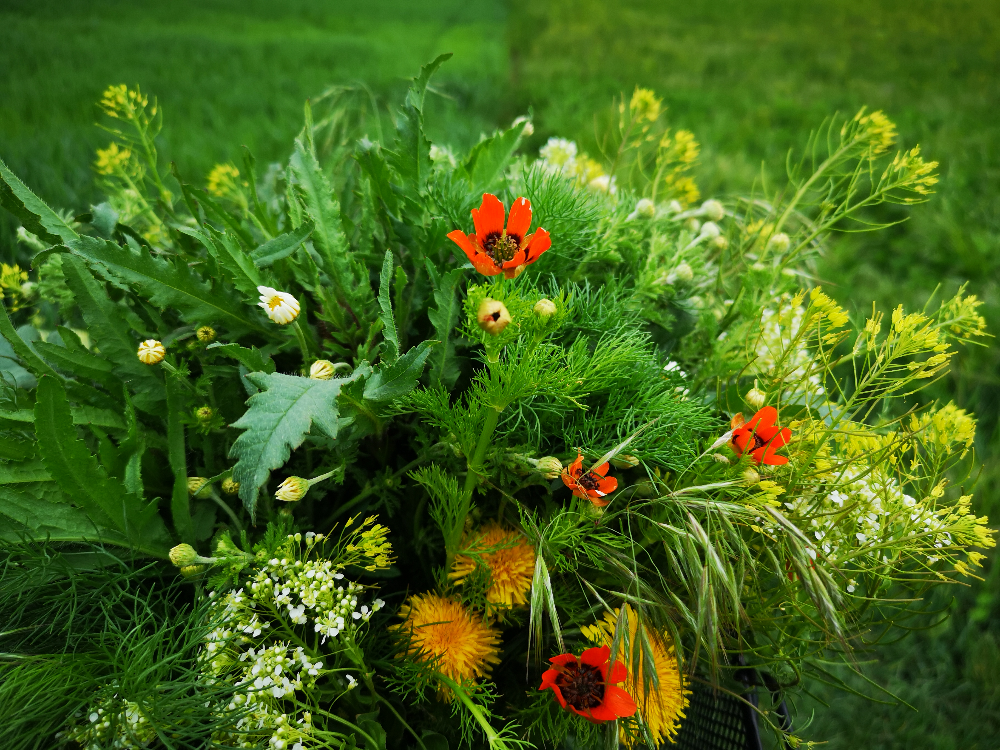
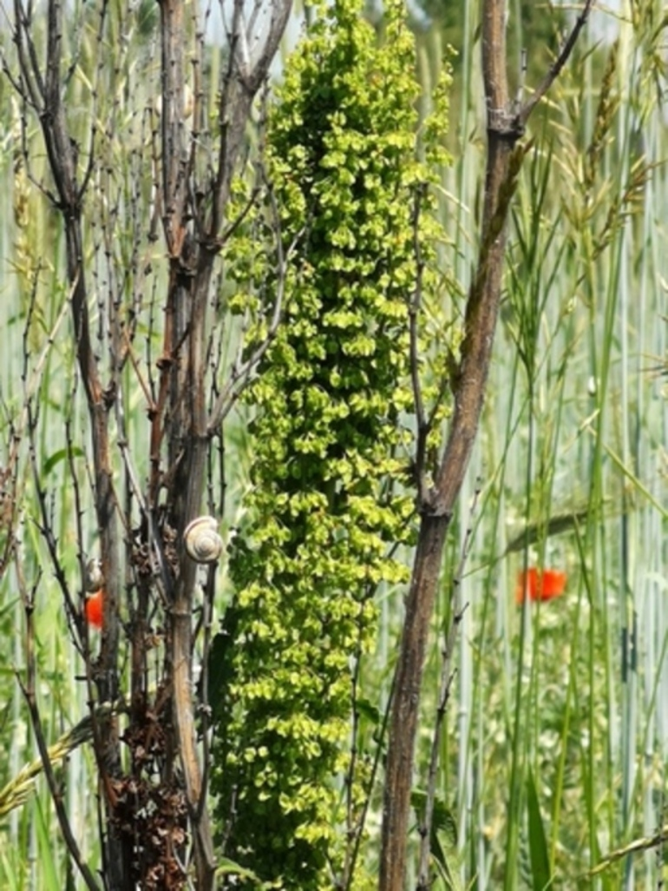
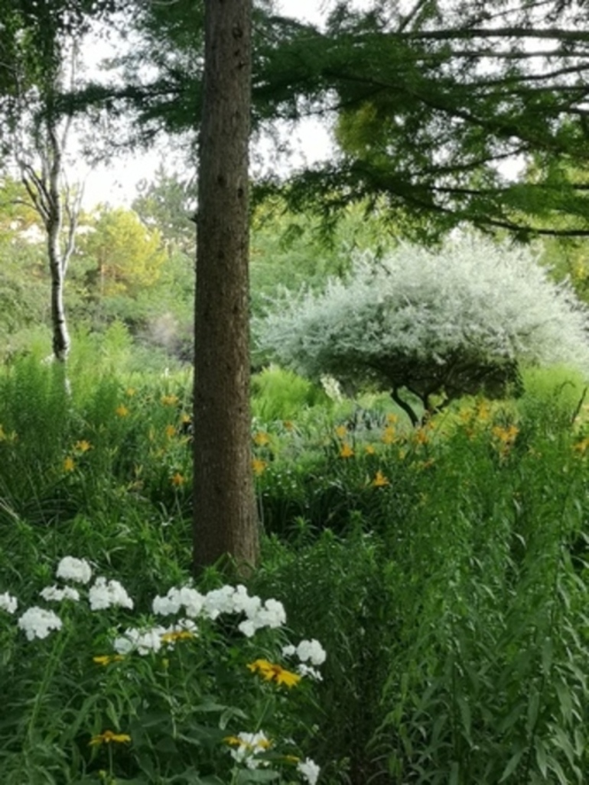
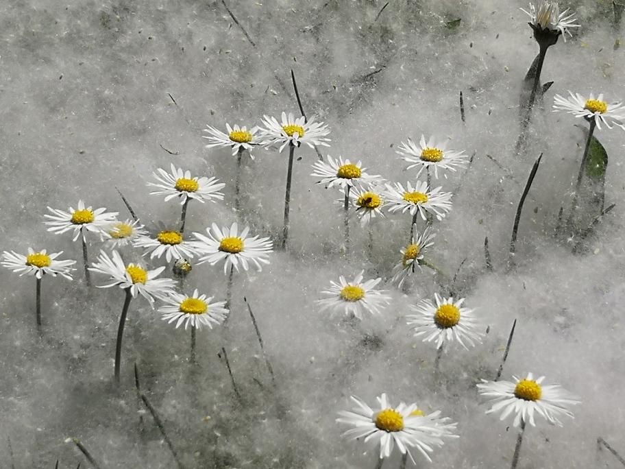

<r-grid columns=8 columns-s=2>
  <r-cell span-s=row span=1+3>
    <h3>Joy nimmt wahr.</h3>
    <h3>Verweile im Augenblick, dem Moment verschrieben.</h3>
    <br>
    <p>
      Fasziniation der Vielfalt. Inspiration der Schöpfung. Ausdruck meiner Seele. Geschenke der Natur.
    </p>
  </r-cell>
  <r-cell span=5+2 span-s=row>
    
    
    
  </r-cell>
  <r-cell span=7-8 span-s=row>
    
    
    
  </r-cell>
  <r-cell span-s=row span=1+2 class="grey-bg cta blue">
    <a href="malerei" title="Zur Malerei">← zurück</a>
    <a href="seelenlandschaften" title="Weiter zu Seelenlandschaften">weiter →</a>
  </r-cell>
</r-grid>
